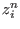
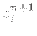
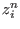
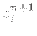
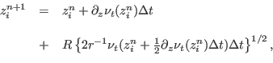

Next: Module mtridiagonal Up: Utilities Previous: Advection schemes Contents
INTERFACE:
subroutine lagrange(nlev,dt,zlev,nuh,w,npar,active,zi,zp)DESCRIPTION:
Here a Lagrangian particle random walk for spatially
inhomogeneous turbulence according to Visser (1997) is implemented.
With the random walk, the particle  is moved from the vertical
position  to  according to the following algorithm:
is moved from the vertical
position  to  according to the following algorithm:
|  | (243) |
USES:
IMPLICIT NONEINPUT PARAMETERS:
integer, intent(in) :: nlev REALTYPE, intent(in) :: dt REALTYPE, intent(in) :: zlev(0:nlev) REALTYPE, intent(in) :: nuh(0:nlev) REALTYPE, intent(in) :: w integer, intent(in) :: npar logical, intent(in) :: active(npar)INPUT/OUTPUT PARAMETERS:
integer, intent(inout) :: zi(npar) REALTYPE, intent(inout) :: zp(npar)REVISION HISTORY:
Original author(s): Hans Burchard & Karsten BoldingLOCAL VARIABLES:
integer :: i,n REALTYPE :: rnd(npar),rnd_var_inv REALTYPE,parameter :: visc_back=0.e-6,rnd_var=0.333333333 REALTYPE :: depth,dz(nlev),dzn(nlev),step,zp_old REALTYPE :: visc,rat,dt_inv,zloc logical,parameter :: visc_corr=.false.